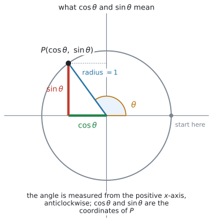
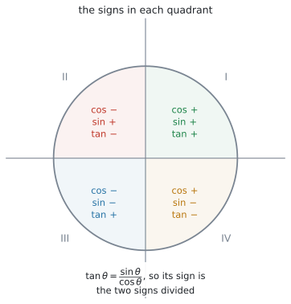
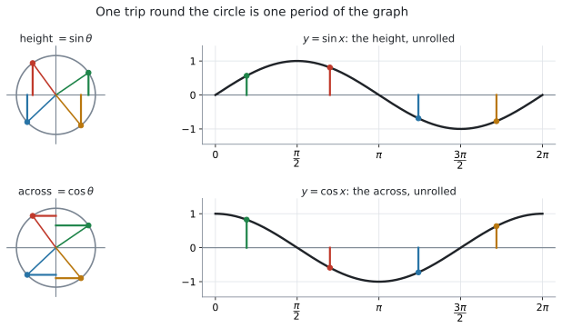
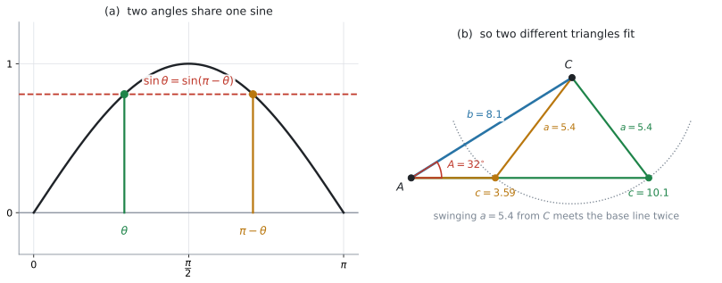

AHL 3.8 — The unit circle and identities（単位円と三角比の恒等式）
- unit circle（単位円）の上の点の座標が \((\cos\theta,\ \sin\theta)\) であることを説明できる。
- \(\theta\) がどの quadrant（象限）にあるかで、\(\cos\theta\)、\(\sin\theta\)、\(\tan\theta\) の符号が決まることを使える。
- Pythagorean identity \(\cos^{2}\theta + \sin^{2}\theta = 1\) で、片方からもう片方を求められる（符号は象限で決める）。
- \(\tan\theta = \dfrac{\sin\theta}{\cos\theta}\) を使え、\(\cos\theta = 0\) では定義されないと言える。
- \(y = \sin x\) と \(y = \cos x\) のグラフが、単位円を \(1\) 周することから出てくると説明できる。
- sine rule で角を求めるとき、\(2\) つの三角形があり得る場合（ambiguous case）を扱える。
- 有限区間の三角方程式を、グラフの交点で解き、その区間の解を全部出せる。
\(2\) 行あります。 見出しは Identities です。
\[ \cos^{2}\theta + \sin^{2}\theta = 1, \qquad \tan\theta = \frac{\sin\theta}{\cos\theta} \tag{1}\]
この \(2\) 行は配られるので、覚える必要はありません。 身につけるのは、どちらをいつ使うかと、符号をどう決めるかのほうです。
いっぽう、単位円による \(\cos\theta\) と \(\sin\theta\) の定義そのものは、公式集にありません。 これは「覚える式」ではなく、図の読み方です（第1節）。
sine rule は SL 3.2 と同じもので、公式集の 3.2 の欄に印刷されています。ambiguous case のための追加の公式はありません（第8節）。
The idea
1. 単位円で \(\cos\theta\) と \(\sin\theta\) を定義します
unit circle（単位円）は、原点を中心とする半径 \(1\) の円です。
その円周上に点 \(P\) を取り、正の \(x\) 軸から反時計回りに測った角を \(\theta\) とします。このとき
\[ P = (\cos\theta,\ \sin\theta) \tag{2}\]
と決めます。これが定義です。

図 1 を見てください。\(\cos\theta\) は横の座標、\(\sin\theta\) は縦の座標です。それ以上の意味はありません。
この定義の利点は、\(\theta\) がどんな値でもよいことです。 \(\theta\) が \(\dfrac{\pi}{2}\) を超えても、負でも、\(2\pi\) を超えても、点 \(P\) は円周のどこかにあり、座標は決まります。
2. 直角三角形の定義と、つながっています
SL 3.2 では、SOH-CAH-TOA で三角比を決めました。
\[ \cos\theta = \frac{\text{adjacent}}{\text{hypotenuse}}, \qquad \sin\theta = \frac{\text{opposite}}{\text{hypotenuse}} \]
\(\theta\) が第 \(1\) 象限にあるときを考えます。\(P\) から \(x\) 軸に垂線を下ろすと、直角三角形ができます。斜辺は半径なので \(1\) です。この範囲では横も縦も正なので、adjacent と opposite の長さが、そのまま座標の値になります。
\[ \cos\theta = \frac{\text{横}}{1} = \text{横}, \qquad \sin\theta = \frac{\text{縦}}{1} = \text{縦} \]
となり、SL の定義とぴったり一致します。 単位円は、SL の定義を置きかえるものではありません。
第 \(1\) 象限の外では、この対応は使えません。 図 1 の \(\theta\) は第 \(2\) 象限なので、垂線で作った三角形の底辺の長さは \(0.589\) ですが、\(\cos\theta\) は \(-0.589\) です。長さは正、座標は符号つき——ここが違います。
SOH-CAH-TOA が使えるのは、直角三角形の中にある角、つまり \(0 < \theta < \dfrac{\pi}{2}\) だけです。
\(\theta = 2\) ラジアン（約 \(115^{\circ}\)）のような角には、そもそも直角三角形が作れません。それでも単位円の上には点があり、座標があります。
\(0 < \theta < \dfrac{\pi}{2}\) では両方の定義が同じ値を返し、それ以外の \(\theta\) では単位円のほうだけが使えます。 だから、単位円のほうを定義に採用します。
3. 象限で、符号が決まります
座標なので、どちらの向きかで符号が決まります。
| \(\theta\) の位置 | \(\cos\theta\) | \(\sin\theta\) | \(\tan\theta\) |
|---|---|---|---|
| 第 \(1\) 象限 \(\left(0 < \theta < \dfrac{\pi}{2}\right)\) | \(+\) | \(+\) | \(+\) |
| 第 \(2\) 象限 \(\left(\dfrac{\pi}{2} < \theta < \pi\right)\) | \(-\) | \(+\) | \(-\) |
| 第 \(3\) 象限 \(\left(\pi < \theta < \dfrac{3\pi}{2}\right)\) | \(-\) | \(-\) | \(+\) |
| 第 \(4\) 象限 \(\left(\dfrac{3\pi}{2} < \theta < 2\pi\right)\) | \(+\) | \(-\) | \(-\) |

\(\tan\theta\) の欄は、覚えるものではありません。 \(\tan\theta = \dfrac{\sin\theta}{\cos\theta}\) なので、上の \(2\) つの符号を割り算した結果です（第6節）。
\(\sin\theta = 0.5\) を満たす \(\theta\) は、\(0 \leq \theta \leq 2\pi\) の中に \(\dfrac{\pi}{6}\) と \(\dfrac{5\pi}{6}\) の \(2\) つあります。
しかし電卓の \(\arcsin(0.5)\) は \(\dfrac{\pi}{6}\) しか返しません。返ってくるのは決まった範囲の \(1\) つだけだからです。
残りの角は、単位円かグラフで自分で見つけます（第9節、Common errors の \(1\) つ目）。
4. よく出る角の値 — 暗記は問われません
\(\sin\dfrac{\pi}{3} = \dfrac{\sqrt{3}}{2}\) のような値を暗記する必要はありません。 試験では電卓が使えます。
それでも下の表を載せるのは、単位円のどこの座標なのかを見るためです。
| 度 | ラジアン | \(\cos\theta\) | \(\sin\theta\) | \(\tan\theta\) |
|---|---|---|---|---|
| \(0^{\circ}\) | \(0\) | \(1\) | \(0\) | \(0\) |
| \(30^{\circ}\) | \(\dfrac{\pi}{6}\) | \(\dfrac{\sqrt{3}}{2} \approx 0.866\) | \(\dfrac{1}{2}\) | \(\dfrac{\sqrt{3}}{3} \approx 0.577\) |
| \(45^{\circ}\) | \(\dfrac{\pi}{4}\) | \(\dfrac{\sqrt{2}}{2} \approx 0.707\) | \(\dfrac{\sqrt{2}}{2} \approx 0.707\) | \(1\) |
| \(60^{\circ}\) | \(\dfrac{\pi}{3}\) | \(\dfrac{1}{2}\) | \(\dfrac{\sqrt{3}}{2} \approx 0.866\) | \(\sqrt{3} \approx 1.732\) |
| \(90^{\circ}\) | \(\dfrac{\pi}{2}\) | \(0\) | \(1\) | 定義されない |
表 2 の上と下の行だけは、図から読めるようにしておくと役に立ちます。 \(\theta = 0\) の点は \((1,\ 0)\)、\(\theta = \dfrac{\pi}{2}\) の点は \((0,\ 1)\) です。座標をそのまま読んだだけの値です。
\(\theta = \dfrac{\pi}{2}\) で \(\tan\theta\) が定義されないのは、\(\cos\dfrac{\pi}{2} = 0\) で、分母が \(0\) になるからです（第6節）。
5. \(\cos^{2}\theta + \sin^{2}\theta = 1\)
公式集の \(2\) 行（式 1）の \(1\) 行目です。
\[ \cos^{2}\theta + \sin^{2}\theta = 1 \tag{3}\]
意味は「\(P\) が半径 \(1\) の円の上にある」ということ、それだけです。 円の方程式 \(x^{2}+y^{2} = 1\) に、\(x = \cos\theta\)、\(y = \sin\theta\) を入れただけです（Why it works）。
\(\cos(\theta^{2})\) ではありません。先に \(\cos\theta\) を出して、それを \(2\) 乗します。
\(\theta = 2\) なら \(\cos 2 = -0.416147\ldots\) なので \(\cos^{2}2 = 0.1732\) です。\(\cos 4 = -0.6536\) とは別の数です。
電卓に打つときも、\((\cos(2))^{2}\) の順で入れてください。
使いどころは \(1\) つです。片方が分かっていて、もう片方がほしいとき。
\(\cos\theta = 0.6\) なら
\[ \sin^{2}\theta = 1 - 0.6^{2} = 1 - 0.36 = 0.64 \ \Longrightarrow \ \sin\theta = \pm 0.8 \]
\(\pm\) が出ます。どちらかは、\(\theta\) の象限が決めます（表 1、例 1）。象限が与えられていなければ、両方が答えです。
6. \(\tan\theta = \dfrac{\sin\theta}{\cos\theta}\)
式 1 の \(2\) 行目です。
\[ \tan\theta = \frac{\sin\theta}{\cos\theta} \tag{4}\]
これも SL 3.2 の \(\tan\theta = \dfrac{\text{opposite}}{\text{adjacent}}\) と同じものです。単位円では縦が \(\sin\theta\)、横が \(\cos\theta\) なので、その割り算になります。
\(\cos\theta = 0\) のところでは、\(\tan\theta\) は定義されません。 単位円で \(\cos\theta = 0\) になるのは、\(P\) が縦軸の上にあるとき、つまり
\[ \theta = \ldots,\ -\frac{\pi}{2}, \quad \frac{\pi}{2}, \quad \frac{3\pi}{2}, \ \ldots \qquad \left(\theta = \frac{\pi}{2} + n\pi, \ n \text{ は整数}\right) \]
です。\(\dfrac{\pi}{2}\) から、両向きに \(\pi\) おき、と覚えておけば十分です。
7. 単位円から、\(\sin x\) と \(\cos x\) のグラフが出てきます
Guidance が「understand how the graphs of \(f(x) = \sin x\) and \(f(x) = \cos x\) can be constructed from the unit circle」と求めている内容です。

図 3 の上の段が \(\sin\)、下の段が \(\cos\) です。
- \(\sin x\) のグラフ … 点 \(P\) の高さを、\(x\) を横に取って並べたもの
- \(\cos x\) のグラフ … 点 \(P\) の横の位置を、同じように並べたもの
ここから、グラフの性質が全部読めます。
8. sine rule の ambiguous case
SL 3.2 には「ambiguous case は出ません」と書いてあります。HL では出ます。 Content 欄の Extension of the sine rule to the ambiguous case. が、この節です。
起きるのは \(1\) つの場合だけです。 \(2\) 辺と、そのあいだにない角（\(a\)、\(b\)、\(A\)）が与えられて、角 \(B\) を sine rule で求めるときです。
\[ \frac{\sin B}{b} = \frac{\sin A}{a} \ \Longrightarrow \ \sin B = \frac{b\sin A}{a} \]

図 4 の (a) が理由です。\(0\) と \(\pi\) のあいだに、同じ \(\sin\) の値を取る角が \(2\) つあります（値が \(1\) より小さいとき。ちょうど \(1\) なら \(\dfrac{\pi}{2}\) の \(1\) つだけです）。
\[ \sin\theta = \sin(\pi - \theta) \tag{5}\]
三角形の角は \(0\) と \(\pi\) のあいだなので、どちらも候補になります。 (b) は、その \(2\) つが実際に別々の三角形になっている様子です。
\(4\) つの手順があります。
- sine rule で、\(\sin B\) の値 \(k\) を出す
- \(k > 1\) なら、三角形は存在しません。そこで終わり
- \(B_1 = \arcsin k\) と \(B_2 = 180^{\circ} - B_1\) の \(2\) つを書く（\(k = 1\) なら \(B = 90^{\circ}\) の \(1\) つだけ）
- それぞれについて \(A + B < 180^{\circ}\) を確かめる。通ったものだけが三角形になる
\(4\) 段目は、落とすためにあります。
\(A = 40^{\circ}\)、\(a = 9\)、\(b = 6\) なら \(\sin B = \dfrac{6\sin 40^{\circ}}{9} = 0.4285\) で、\(B_1 = 25.4^{\circ}\)、\(B_2 = 154.6^{\circ}\) です。しかし
\[ 40^{\circ} + 154.6^{\circ} = 194.6^{\circ} > 180^{\circ} \]
なので、\(B_2\) は三角形になりません。 答えは \(B = 25.4^{\circ}\) の \(1\) つだけです。
目安として、\(a \geq b\) なら \(B_2\) は必ず落ちます。 \(2\) つの三角形が出るのは \(a < b\) のときにかぎられます（そのときも、\(4\) 段目の確認は必要です）。
問題文に Find the two possible values と書いてあれば \(2\) つ、Find the size of angle B だけなら、\(4\) 段目で自分で決めます（例 3）。
9. 有限区間の三角方程式は、グラフで解きます
Content 欄の Graphical methods of solving trigonometric equations in a finite interval. です。
三角関数はくり返すので、解があるときは無限にあります。 だから問題文は必ず、\(0 \leq x \leq 2\pi\) のような区間を指定します。（\(\sin x = 2\) のように、\(1\) つも解がない式もあります。） その区間の中の解を、全部出すことが求められます。
やり方は \(1\) つです（GDC 第3節）。
- 左辺を \(f_1\)、右辺を \(f_2\) としてグラフに入れる
- 表示範囲を、指定された区間にそろえる
- 交点を端から端まですべて拾う
\(4\cos(2x) + 1 = 3\) を \(0 \leq x \leq 2\pi\) で解くと、解は
\[ x = 0.524, \quad 2.62, \quad 3.67, \quad 5.76 \]
の \(4\) つです。\(1\) つ見つけて終わりにしないでください（例 4）。
同じ式でも、\(0 \leq x \leq \pi\) なら解は \(0.524\) と \(2.62\) の \(2\) つだけです。
「いくつあるか」は、式と区間の両方で決まります。 先に区間を見て、グラフをその範囲に合わせてください。
端の値も忘れずに。 \(0 \leq x \leq 2\pi\) と \(0 < x < 2\pi\) では、端が解のときに答えが変わります。
Why it works
\(\cos^{2}\theta + \sin^{2}\theta = 1\) は、円の方程式そのものです。
原点を中心とする半径 \(1\) の円の上の点 \((x,\ y)\) は
\[ x^{2} + y^{2} = 1 \]
を満たします（SL 3.1 の距離の考え方です）。式 2 で \(x = \cos\theta\)、\(y = \sin\theta\) と決めたので、そのまま代入すれば 式 3 になります。
第 \(1\) 象限では、これは三平方の定理そのものです。横 \(\cos\theta\)、縦 \(\sin\theta\)、斜辺 \(1\) の直角三角形ができるからです。
それ以外の象限でも成り立ちます。 座標が負になっても、\(2\) 乗すれば正になるからです。\(\theta = \pi\) なら \(\cos\theta = -1\)、\(\sin\theta = 0\) で、\((-1)^{2} + 0^{2} = 1\) ✓
次に、\(\sin\theta = \sin(\pi - \theta)\) です。
角 \(\pi - \theta\) の点は、角 \(\theta\) の点を \(y\) 軸について折り返した位置にあります（AHL 2.8 の \(y\) 軸対称です）。折り返すと
- 高さは変わりません → \(\sin(\pi-\theta) = \sin\theta\)
- 横は符号が反転します → \(\cos(\pi-\theta) = -\cos\theta\)
「高さが変わらない」——これが ambiguous case の正体です。\(\sin B\) の値だけからでは、\(B\) が左右どちらの点なのかが決まりません。だから候補が \(2\) つ出ます（第8節）。
\(\cos\) のほうは符号が変わるので、cosine rule で角を求めるときは、こうなりません。 角が \(1\) つに決まります（SL 3.2）。
Worked examples
問題文は英語です。意味が理解できなかったら、問題文の下の「日本語訳」を開いてください。解説は日本語です。
例題 1 Let \(\cos\theta = 0.6\), where \(\dfrac{3\pi}{2} < \theta < 2\pi\).
(a) Find the value of \(\sin\theta\).
(b) Find the value of \(\tan\theta\).
(c) Explain why \(\sin\theta\) is negative for this value of \(\theta\).
日本語訳
\(\dfrac{3\pi}{2} < \theta < 2\pi\) で \(\cos\theta = 0.6\) とします。
(a) \(\sin\theta\) の値を求めなさい。
(b) \(\tan\theta\) の値を求めなさい。
(c) この \(\theta\) について \(\sin\theta\) が負である理由を説明しなさい。
(a) 式 3 に入れます。
\[ 0.6^{2} + \sin^{2}\theta = 1 \ \Longrightarrow \ \sin^{2}\theta = 0.64 \ \Longrightarrow \ \sin\theta = \pm 0.8 \]
ここで象限を見ます。 \(\dfrac{3\pi}{2} < \theta < 2\pi\) は第 \(4\) 象限なので、\(\sin\theta\) は負です（表 1）。
\[ \sin\theta = -0.8 \]
(b) 式 4 です。
\[ \tan\theta = \frac{-0.8}{0.6} = -\frac{4}{3} \approx -1.33 \]
(c) Explain why なので、言葉で答えます。 第 \(4\) 象限の点は、\(x\) 軸より下にあります。\(\sin\theta\) はその点の高さなので、負になります。
試験ではこう書く
Since \(\dfrac{3\pi}{2} < \theta < 2\pi\), the point on the unit circle lies in the fourth quadrant, below the \(x\)-axis. As \(\sin\theta\) is the \(y\)-coordinate of that point, it must be negative. Hence \(\sin\theta = -0.8\) and not \(+0.8\).
（\(\dfrac{3\pi}{2} < \theta < 2\pi\) なので、単位円上の点は第 \(4\) 象限、つまり \(x\) 軸より下にある。\(\sin\theta\) はその点の \(y\) 座標なので、負でなければならない。したがって \(\sin\theta\) は \(+0.8\) ではなく \(-0.8\) である、という意味です。）
検算。 別の道で \(\theta\) そのものを出します。\(\arccos(0.6) = 0.9273\) で、第 \(4\) 象限側は \(\theta = 2\pi - 0.9273 = 5.356\) です。電卓で \(\sin(5.356) = -0.800\) ✓ 符号まで合いました。
\(\cos^{2}\theta+\sin^{2}\theta\) を足す検算は、ここでは役に立ちません。 \(+0.8\) でも \(-0.8\) でも \(1\) になり、いちばん危ない符号を見逃すからです（GDC 第5節）。\(\tan\theta\) の符号のほうは使えます。第 \(4\) 象限では負のはずで、\(-1.33 < 0\) ✓（表 1）
(a) \[\sin^{2}\theta = 1 - 0.6^{2} = 0.64 \ \Rightarrow \ \sin\theta = \pm 0.8\] \[\theta \text{ is in the fourth quadrant, so } \sin\theta = -0.8\]
(b) \[\tan\theta = \frac{-0.8}{0.6} = -\frac{4}{3} \approx -1.33\]
(c) In the fourth quadrant the point on the unit circle is below the \(x\)-axis, and \(\sin\theta\) is its \(y\)-coordinate, so \(\sin\theta < 0\).
例題 2 Consider the graph of \(y = \cos x\) for \(0 \leq x \leq 2\pi\).
(a) Write down the maximum value of \(y\), and the value of \(x\) at which it occurs.
(b) Explain, using the unit circle, why \(y = 0\) when \(x = \dfrac{\pi}{2}\) and when \(x = \dfrac{3\pi}{2}\).
(c) Write down the period of the graph.
日本語訳
\(0 \leq x \leq 2\pi\) における \(y = \cos x\) のグラフを考えます。
(a) \(y\) の最大値と、そのときの \(x\) の値を書きなさい。
(b) \(x = \dfrac{\pi}{2}\) と \(x = \dfrac{3\pi}{2}\) で \(y = 0\) になる理由を、単位円を使って説明しなさい。
(c) このグラフの周期を書きなさい。
(a) \(\cos x\) は単位円上の点の横の座標でした（式 2）。円の半径は \(1\) なので、横に行けるのは \(1\) までです。
\[ \text{maximum } y = 1 \quad \text{at } x = 0 \ \text{(and again at } x = 2\pi\text{)} \]
図 3 の下の段で、両端が \(1\) になっています。出発点 \((1,\ 0)\) に戻ってきたからです。
(b) Explain, using the unit circle と指定されているので、円の話で答えます。
\(x = \dfrac{\pi}{2}\) の点は \((0,\ 1)\)、\(x = \dfrac{3\pi}{2}\) の点は \((0,\ -1)\) です。どちらも縦軸の上にあり、横の座標が \(0\) です。
試験ではこう書く
At \(x = \dfrac{\pi}{2}\) the point on the unit circle is \((0,\ 1)\), and at \(x = \dfrac{3\pi}{2}\) it is \((0,\ -1)\). Both points lie on the \(y\)-axis, so their \(x\)-coordinate is \(0\). Since \(\cos x\) is defined as that \(x\)-coordinate, \(\cos x = 0\) at both values.
（\(x = \dfrac{\pi}{2}\) では単位円上の点は \((0,\ 1)\)、\(x = \dfrac{3\pi}{2}\) では \((0,\ -1)\) である。どちらの点も \(y\) 軸の上にあるので、\(x\) 座標は \(0\) である。\(\cos x\) はその \(x\) 座標として定義されているので、どちらでも \(\cos x = 0\) になる、という意味です。）
(c) 円を \(1\) 周すると、点はもとの位置に戻ります。\(1\) 周は \(2\pi\) radians でした（AHL 3.7）。
\[ \text{period} = 2\pi \]
検算。 電卓で \(\cos 0 = 1\)、\(\cos 2\pi = 1\) ✓ (a) と合います。\(\cos\pi = -1\) が最小で、これは \(0\) と \(2\pi\) のちょうど中間です ✓ (c) の周期 \(2\pi\) とつじつまが合っています。
（(b) の \(2\) つが、\(\tan x\) の定義されない \(x\) でもあることも確かめられます。ただしこれは (b) の答えを言いかえただけなので、検算にはなりません。第6節）
(a) \[\text{maximum } y = 1, \quad \text{at } x = 0 \text{ and } x = 2\pi\]
(b) The points on the unit circle are \((0,\ 1)\) and \((0,\ -1)\). Both have \(x\)-coordinate \(0\), and \(\cos x\) is that \(x\)-coordinate, so \(\cos x = 0\).
(c) \[\text{period} = 2\pi\]
例題 3 In triangle \(ABC\), \(A = 32^{\circ}\), \(a = 5.4\) cm and \(b = 8.1\) cm.
(a) Find the two possible values of angle \(B\).
(b) Show that both values give a possible triangle.
(c) Find the length of \(c\) in each case.
日本語訳
三角形 \(ABC\) で、\(A = 32^{\circ}\)、\(a = 5.4\) cm、\(b = 8.1\) cm です。
(a) 角 \(B\) としてあり得る \(2\) つの値を求めなさい。
(b) どちらの値でも三角形が作れることを示しなさい。
(c) それぞれの場合について、\(c\) の長さを求めなさい。
\(2\) 辺と、そのあいだにない角が与えられています。ambiguous case です（第8節）。度の記号が付いているので、電卓は Degree にするか、式の中に \(^{\circ}\) を入れます（GDC 第1節）。
(a) sine rule を \(\sin B\) について解きます。
\[ \sin B = \frac{b\sin A}{a} = \frac{8.1 \times \sin 32^{\circ}}{5.4} = 0.7949 \]
\(\sin B < 1\) なので、候補が \(2\) つあります（第8節）。
\[ B_1 = \arcsin(0.7949) = 52.6^{\circ}, \qquad B_2 = 180^{\circ} - 52.6^{\circ} = 127.4^{\circ} \]
(b) \(4\) 段目の確認です。\(A + B < 180^{\circ}\) かどうかを見ます。
\[ 32^{\circ} + 52.6^{\circ} = 84.6^{\circ} < 180^{\circ} \ ✓ \]
\[ 32^{\circ} + 127.4^{\circ} = 159.4^{\circ} < 180^{\circ} \ ✓ \]
どちらも通るので、三角形は \(2\) つあります。
(c) それぞれ \(C\) を出してから、sine rule で \(c\) を求めます。
\(B = 52.6^{\circ}\) のとき \(C = 180^{\circ} - 32^{\circ} - 52.6^{\circ} = 95.4^{\circ}\) で
\[ c = \frac{a\sin C}{\sin A} = \frac{5.4 \times \sin 95.4^{\circ}}{\sin 32^{\circ}} = 10.1 \text{ cm} \]
\(B = 127.4^{\circ}\) のとき \(C = 180^{\circ} - 32^{\circ} - 127.4^{\circ} = 20.6^{\circ}\) で
\[ c = \frac{5.4 \times \sin 20.6^{\circ}}{\sin 32^{\circ}} = 3.59 \text{ cm} \]
検算。 \(a < b\) は、\(2\) つ出るための必要条件にすぎません（\(a \geq b\) なら \(B_2\) は落ちます。第8節）。\(2\) つあると言えるのは、(b) で \(4\) 段目を両方が通ったからです。
もう \(1\) つ、それぞれの三角形が筋の通った形になっているかを見ます。\(B = 127.4^{\circ}\) の三角形では、いちばん大きい角は \(B\) なので、いちばん長い辺は \(b = 8.1\) のはずです。\(8.1 > 5.4 > 3.59\) ✓ もう \(1\) つでは最大角が \(C = 95.4^{\circ}\) なので最長は \(c\)、\(10.1 > 8.1 > 5.4\) ✓
(a) \[\sin B = \frac{8.1\sin 32^{\circ}}{5.4} = 0.7949\] \[B = 52.6^{\circ} \quad \text{or} \quad B = 180^{\circ} - 52.6^{\circ} = 127.4^{\circ}\]
(b) \[32^{\circ} + 52.6^{\circ} = 84.6^{\circ} < 180^{\circ}; \qquad 32^{\circ} + 127.4^{\circ} = 159.4^{\circ} < 180^{\circ}\] Both are less than \(180^{\circ}\), so both give a triangle.
(c) \[C = 95.4^{\circ}: \quad c = \frac{5.4\sin 95.4^{\circ}}{\sin 32^{\circ}} = 10.1 \text{ cm}\] \[C = 20.6^{\circ}: \quad c = \frac{5.4\sin 20.6^{\circ}}{\sin 32^{\circ}} = 3.59 \text{ cm}\]
例題 4 The depth of water in a harbour, \(h\) metres, is modelled by
\[ h(t) = 6.4 + 2.5\sin(0.5t) \]
where \(t\) is the time in hours after midnight, for \(0 \leq t \leq 24\).
(a) Write down the maximum depth of the water.
(b) Find all the values of \(t\) in this interval for which the depth is \(8\) metres.
(c) A boat needs a depth of at least \(8\) metres to enter the harbour. Interpret your answer to part (b) for the captain of the boat.
日本語訳
港の水深 \(h\) メートルが、上の式でモデル化されます。\(t\) は真夜中からの経過時間（時間）で、\(0 \leq t \leq 24\) です。
(a) 水深の最大値を書きなさい。
(b) この区間で水深が \(8\) メートルになる \(t\) の値を、すべて求めなさい。
(c) ある船が港に入るには、水深が \(8\) メートル以上必要です。(b) の答えを、その船の船長に向けて解釈しなさい。
(a) \(\sin\) の最大値は \(1\) でした（第7節）。
\[ h_{\max} = 6.4 + 2.5 \times 1 = 8.9 \text{ m} \]
\(8.9 > 8\) なので、水深が \(8\) m に届く時刻はあります。
(b) all the values なので、区間の中の解を全部出します（第9節）。
\[ f_1(x) = 6.4 + 2.5\sin(0.5x), \qquad f_2(x) = 8 \]
をグラフに入れ、\(0 \leq x \leq 24\) に表示範囲を合わせて交点を拾います（GDC 第3節）。
\[ t = 1.39, \quad 4.89, \quad 14.0, \quad 17.5 \]
\(4\) つあります。 周期は \(\dfrac{2\pi}{0.5} = 12.6\) 時間なので、\(24\) 時間のあいだに山が \(2\) 回来ます。だから交点も \(2\) 回ぶん、つまり \(4\) つです。
(c) Interpret なので、船長に伝わる言葉で書きます。深さが \(8\) m 以上なのは、交点と交点のあいだです。
\[ 1.39 \leq t \leq 4.89 \qquad \text{と} \qquad 14.0 \leq t \leq 17.5 \]
試験ではこう書く
The depth is \(8\) m or more between \(t = 1.39\) and \(t = 4.89\), and again between \(t = 14.0\) and \(t = 17.5\). So the boat can enter the harbour during two windows: from about \(01{:}23\) to about \(04{:}54\), and from about \(13{:}57\) to about \(17{:}28\). Each window lasts about \(3.5\) hours, and outside them the water is too shallow.
（水深が \(8\) m 以上なのは \(t = 1.39\) から \(t = 4.89\) までと、\(t = 14.0\) から \(t = 17.5\) までである。したがって船が港に入れるのは \(2\) つの時間帯、おおよそ \(01{:}23\) から \(04{:}54\) までと、\(13{:}57\) から \(17{:}28\) までである。どちらも約 \(3.5\) 時間で、それ以外の時間は水深が足りない、という意味です。）
検算。 \(t = 3\)（\(1\) つ目の時間帯の中）を入れると \(h = 6.4 + 2.5\sin 1.5 = 8.89\) で、\(8\) より大きい ✓ \(t = 8\)（時間帯の外）なら \(h = 6.4 + 2.5\sin 4 = 4.51\) で、\(8\) より小さい ✓ 時間帯の取り方が合っています。
(a) \[h_{\max} = 6.4 + 2.5 = 8.9 \text{ m}\]
(b) \[t = 1.39,\ 4.89,\ 14.0,\ 17.5\]
(c) The depth is at least \(8\) m for \(1.39 \leq t \leq 4.89\) and for \(14.0 \leq t \leq 17.5\), so the boat can enter during those two windows, each lasting about \(3.5\) hours.
Common errors
Find all the values と書いてあったり、区間 \(0 \leq x \leq 2\pi\) が指定されているのに、電卓の \(\arcsin\) が返した \(1\) つだけで終わる誤りです。
\(\sin x = 0.5\) を \(0 \leq x \leq 2\pi\) で解くと、答えは \(0.524\) と \(2.62\) の \(2\) つです。
グラフを区間いっぱいに表示して、交点を端から端まで数えてください（第9節）。
\(B_2 = 180^{\circ} - B_1\) を出しただけで「答えは \(2\) つ」としてしまう誤りです。
\(A + B_2 < 180^{\circ}\) を確かめてください（第8節）。通らなければ、その三角形は存在しません。
逆に、\(B_2\) を出さずに \(1\) つで終わるのも誤りです。\(2\) つ書いて、確認して落とす——この順です。
\(\cos^{2}\theta\) は \((\cos\theta)^{2}\) です（第5節）。
\(\theta = 2\) なら \(\cos^{2}2 = (-0.416147\ldots)^{2} = 0.1732\) ですが、\(\cos(2^{2}) = \cos 4 = -0.6536\) です。まったく別の数になります。
電卓には \((\cos(2))^{2}\) の順で打ってください。
Using your GDC (TI-Nspire CX II)
1. 角の設定と、\(^{\circ}\) の入れ方
doc → Settings → Document SettingsAngle を Radian にしておきます。HL の既定はラジアンだからです。
度を使いたいところだけ、式の中に度の記号を入れます。
sin(32°)度の記号は、キーボードのいちばん下、左端の π のキーを押すと開く記号パレットから選びます。設定を切りかえるより安全です（AHL 3.7 と同じやり方です）。
2. 単位円の点を出す
\(\theta = 2\) の点の座標がほしければ、そのまま打ちます。
cos(2)
sin(2)\(-0.416147\) と \(0.909297\) が返ります。横が負、縦が正なので、第 \(2\) 象限です（表 1）。\(\dfrac{\pi}{2} = 1.5708 < 2 < 3.1416 = \pi\) なので、合っています。
式 3 の検算もできます。
\(\cos(2)^{2} + \sin(2)^{2}\)
\(1\) が返れば正しく打てています。
3. 有限区間の方程式は、グラフの交点で解きます
ctrl + doc → Add Graphs
f1(x)=6.4+2.5*sin(0.5*x)
f2(x)=8次が大事です。表示範囲を、問題の区間に合わせます。
menu → Window/Zoom → Window Settings
XMin=0 XMax=24\(y\) は Zoom - Fit で合わせられます（現在の \(x\) 範囲に合わせて \(y\) を決めます）。
そのうえで
menu → Analyze Graph → Intersectionを使い、交点を \(1\) つずつ拾います。 左端から右端まで、全部です。
周期が分かれば、個数の見当が付きます。\(f_1\) の周期は \(\dfrac{2\pi}{0.5} = 12.6\) 時間なので、\(0 \leq t \leq 24\) には山が \(2\) 回来ます。
水平線が山を横切れば、山 \(1\) つにつき交点 \(2\) つです。だから \(4\) つのはずだ、と分かります。区間の端で山が切れているときは、この数え方が使えません。 そのときはグラフを見て数えます。
見積もりと拾った個数が合わなければ、拾い落としています。
4. ambiguous case の \(2\) つの角
電卓が返すのは \(B_1\) だけです。
\(\sin^{-1}(0.7949)\)
Radian 設定のままなら、\(0.9188\) radians が返ります。度の記号は入力にしか効かないので、出力は自分で直します。
\(0.9188 \times \dfrac{180}{\pi}\)
\(52.6^{\circ}\) が出ます（AHL 3.7）。三角形の問題を続けて解くなら、Document Settings を Degree にしてしまうほうが速いこともあります。
\(B_2\) は自分で引き算します。
180-52.65. 検算のしかた
- 出た値を、もとの式に戻す。 \(h(1.39) = 8.00\) ✓ のように。これがいちばん強い検算です
- 符号は、象限と合っているかを見る（表 1）
- ambiguous case は、最大の角に最長の辺が対応しているかを、与えられた辺と比べて見る
- 交点の個数は、周期からの見積もりと突き合わせる
Exercises
各問題に、折りたたみが3つ付いています。日本語訳、解答例（答案用紙に書くべきこと。英語です）、解説（なぜそうなるか。日本語です）。
まず自分で解いて、次に解答例と見くらべてください。解説は、合わなかったときだけ開けば十分です。
1 Let \(\sin\theta = 0.28\), where \(\dfrac{\pi}{2} < \theta < \pi\). Find the value of \(\cos\theta\) and the value of \(\tan\theta\), each correct to \(3\) significant figures.
日本語訳
\(\dfrac{\pi}{2} < \theta < \pi\) で \(\sin\theta = 0.28\) とします。\(\cos\theta\) と \(\tan\theta\) の値を、それぞれ有効数字 \(3\) 桁で求めなさい。
\[\cos^{2}\theta = 1 - 0.28^{2} = 0.9216 \ \Rightarrow \ \cos\theta = \pm 0.960\]
\[\theta \text{ is in the second quadrant, so } \cos\theta = -0.960\]
\[\tan\theta = \frac{0.28}{-0.960} = -0.292\]
式 3 を \(\cos\theta\) について使います。\(0.28^{2} = 0.0784\) なので \(\cos^{2}\theta = 0.9216\) です。
符号は象限で決めます。 \(\dfrac{\pi}{2} < \theta < \pi\) は第 \(2\) 象限なので、\(\cos\theta\) は負です（表 1）。
検算。 第 \(2\) 象限では \(\tan\theta\) が負のはずです。\(-0.292 < 0\) ✓ 符号を取りちがえたら、ここで落ちます。
\(\cos^{2}\theta+\sin^{2}\theta\) を足す検算は、\(+0.96\) でも \(-0.96\) でも \(1\) になるので、符号の確認にはなりません（GDC 第5節）。
2 Let \(\theta = 4\) radians. Write down the sign (positive or negative) of \(\cos\theta\), of \(\sin\theta\) and of \(\tan\theta\), and state the quadrant in which \(\theta\) lies.
日本語訳
\(\theta = 4\) ラジアンとします。\(\cos\theta\)、\(\sin\theta\)、\(\tan\theta\) の符号（正か負か）を書き、\(\theta\) がどの象限にあるかを述べなさい。
\[\pi = 3.14 < 4 < 4.71 = \frac{3\pi}{2}\]
so \(\theta\) is in the third quadrant.
\[\cos\theta < 0, \qquad \sin\theta < 0, \qquad \tan\theta > 0\]
3 Let \(\cos\theta = -0.35\), where \(\dfrac{\pi}{2} < \theta < \pi\). Find the value of \(\sin\theta\) and the value of \(\tan\theta\), each correct to \(3\) significant figures.
日本語訳
\(\dfrac{\pi}{2} < \theta < \pi\) で \(\cos\theta = -0.35\) とします。\(\sin\theta\) と \(\tan\theta\) の値を、それぞれ有効数字 \(3\) 桁で求めなさい。
\[\sin^{2}\theta = 1 - (-0.35)^{2} = 0.8775 \ \Rightarrow \ \sin\theta = \pm 0.937\]
\[\theta \text{ is in the second quadrant, so } \sin\theta = 0.937\]
\[\tan\theta = \frac{0.937}{-0.35} = -2.68\]
\((-0.35)^{2} = 0.1225\) です。負の数を \(2\) 乗すると正になるので、ここで符号は消えます。
第 \(2\) 象限では \(\sin\theta\) が正なので、\(+\) を取ります。
\(\tan\theta\) は、丸めていない値で割ってください。\(\sqrt{0.8775} = 0.936750\) を使うと \(-2.6764\)、\(3\) s.f. で \(-2.68\) です。
検算。 第 \(2\) 象限で \(\tan\theta\) は負のはずです。\(-2.68 < 0\) ✓
もう \(1\) つ、別の道でも出しておきます。\(\theta = \arccos(-0.35) = 1.928\) で、これは \(\dfrac{\pi}{2} = 1.571\) と \(\pi = 3.142\) のあいだ ✓ 電卓で \(\sin(1.928) = 0.937\) ✓ 一致しました。
4 Using the unit circle, write down the value of \(\sin\pi\) and the value of \(\cos\pi\).
日本語訳
単位円を使って、\(\sin\pi\) と \(\cos\pi\) の値を書きなさい。
The point at \(\theta = \pi\) is \((-1,\ 0)\).
\[\sin\pi = 0, \qquad \cos\pi = -1\]
5 Given that \(\cos\theta = 0.8\) and that no restriction is placed on \(\theta\), find the possible values of \(\sin\theta\).
日本語訳
\(\cos\theta = 0.8\) とし、\(\theta\) に制限はないものとします。\(\sin\theta\) としてあり得る値を求めなさい。
\[\sin^{2}\theta = 1 - 0.8^{2} = 0.36\]
\[\sin\theta = 0.6 \quad \text{or} \quad \sin\theta = -0.6\]
象限が指定されていないので、\(2\) つとも答えです（Common errors の \(2\) つ目）。片方だけでは足りません。
\(\cos\theta = 0.8 > 0\) なので、\(\theta\) は第 \(1\) 象限か第 \(4\) 象限です。第 \(1\) なら \(\sin\theta = 0.6\)、第 \(4\) なら \(\sin\theta = -0.6\) になります（表 1）。
検算。 \(\theta = \arccos(0.8) = 0.6435\) なら \(\sin\theta = 0.6\)、\(\theta = 2\pi - 0.6435 = 5.640\) なら \(\sin\theta = -0.6\) ✓ どちらの \(\theta\) も実在するので、\(2\) つとも答えです。
6 In triangle \(ABC\), \(A = 28^{\circ}\), \(a = 6.2\) cm and \(b = 9.5\) cm. Find the two possible values of angle \(B\), and the corresponding length of \(c\) in each case.
日本語訳
三角形 \(ABC\) で、\(A = 28^{\circ}\)、\(a = 6.2\) cm、\(b = 9.5\) cm です。角 \(B\) としてあり得る \(2\) つの値と、それぞれの場合の \(c\) の長さを求めなさい。
\[\sin B = \frac{9.5\sin 28^{\circ}}{6.2} = 0.7194\]
\[B = 46.0^{\circ} \quad \text{or} \quad B = 180^{\circ} - 46.0^{\circ} = 134.0^{\circ}\]
\[B = 46.0^{\circ}: \quad C = 106.0^{\circ}, \quad c = \frac{6.2\sin 106.0^{\circ}}{\sin 28^{\circ}} = 12.7 \text{ cm}\]
\[B = 134.0^{\circ}: \quad C = 18.0^{\circ}, \quad c = \frac{6.2\sin 18.0^{\circ}}{\sin 28^{\circ}} = 4.08 \text{ cm}\]
第8節の手順どおりです。\(\sin B = 0.7194 < 1\) なので、候補が \(2\) つ出ます。
\(4\) 段目の確認をします。\(28^{\circ}+46.0^{\circ} = 74.0^{\circ}\)、\(28^{\circ}+134.0^{\circ} = 162.0^{\circ}\)。どちらも \(180^{\circ}\) 未満なので、三角形は \(2\) つです。
検算。 \(a < b\) は \(2\) つ出るための必要条件です（第8節）。\(2\) つあると言えるのは、\(4\) 段目を両方が通ったからです。
それぞれの三角形で、最大角と最長辺が対応しているかを見ます。\(B = 134.0^{\circ}\) の側は最大角が \(B\) なので最長は \(b = 9.5\)、\(9.5 > 6.2 > 4.08\) ✓ \(B = 46.0^{\circ}\) の側は最大角が \(C = 106.0^{\circ}\) なので最長は \(c\)、\(12.7 > 9.5 > 6.2\) ✓
7 In triangle \(ABC\), \(A = 55^{\circ}\), \(a = 12\) cm and \(b = 9\) cm. Show that there is only one possible triangle, and find the length of \(c\).
日本語訳
三角形 \(ABC\) で、\(A = 55^{\circ}\)、\(a = 12\) cm、\(b = 9\) cm です。三角形は \(1\) つしかないことを示し、\(c\) の長さを求めなさい。
\[\sin B = \frac{9\sin 55^{\circ}}{12} = 0.6144\]
\[B = 37.9^{\circ} \quad \text{or} \quad B = 180^{\circ} - 37.9^{\circ} = 142.1^{\circ}\]
\[55^{\circ} + 142.1^{\circ} = 197.1^{\circ} > 180^{\circ}\]
so the second value is impossible and only \(B = 37.9^{\circ}\) gives a triangle.
\[C = 180^{\circ} - 55^{\circ} - 37.9^{\circ} = 87.1^{\circ}, \quad c = \frac{12\sin 87.1^{\circ}}{\sin 55^{\circ}} = 14.6 \text{ cm}\]
Show that なので、\(2\) つ目の候補を書いて、それが落ちるところまで書いてください。「\(1\) つです」とだけ書いても点になりません。
ここでは \(a = 12 > 9 = b\) です。\(a \geq b\) なら \(B_2\) は必ず落ちます（第8節）。計算する前から見当が付きます。
検算。 最大の角は \(C = 87.1^{\circ}\) なので、最長の辺は \(c\) のはずです。\(14.6 > 12 > 9\) ✓ 対応しています。
8 Explain why the sine rule can give two possible values for an angle in a triangle, while the cosine rule cannot.
日本語訳
sine rule では三角形の角の値が \(2\) 通り出ることがあるのに、cosine rule では出ない理由を説明しなさい。
For \(0 < \theta < 180^{\circ}\), \(\sin\theta = \sin(180^{\circ}-\theta)\), so a value of \(\sin B\) less than \(1\) comes from two different angles, one acute and one obtuse. Both must be tested with \(A + B < 180^{\circ}\). (If \(\sin B = 1\) there is only the one angle \(90^{\circ}\).)
For \(\cos\theta\) the sign changes: \(\cos(180^{\circ}-\theta) = -\cos\theta\). So one value of \(\cos\theta\) comes from only one angle in that range, and the cosine rule gives a single answer.
Explain why なので、英語で理由を書きます。
言うべきことは、「\(\sin\) は折り返しても同じ値、\(\cos\) は符号が変わる」という \(1\) 点です（Why it works）。
数で示すのも有効です。 \(\sin 40^{\circ} = \sin 140^{\circ} = 0.643\) ですが、\(\cos 40^{\circ} = 0.766\)、\(\cos 140^{\circ} = -0.766\) です。
試験ではこう書く
On the unit circle the point for \(180^{\circ}-\theta\) is the reflection in the \(y\)-axis of the point for \(\theta\). Reflecting keeps the height but reverses the horizontal coordinate, so \(\sin(180^{\circ}-\theta) = \sin\theta\) while \(\cos(180^{\circ}-\theta) = -\cos\theta\). Therefore a value of \(\sin B\) below \(1\) corresponds to two angles between \(0^{\circ}\) and \(180^{\circ}\), and both must be checked against \(A + B < 180^{\circ}\). A value of \(\cos B\) corresponds to only one angle in that range, so the cosine rule gives a unique answer. For example \(\sin 40^{\circ} = \sin 140^{\circ} = 0.643\), but \(\cos 40^{\circ} = 0.766\) and \(\cos 140^{\circ} = -0.766\).
9 The temperature in a greenhouse, \(T\ ^{\circ}\)C, is modelled by
\[ T(t) = 18 + 7\sin\left(\frac{\pi t}{12}\right) \]
where \(t\) is the time in hours after 6 am, for \(0 \leq t \leq 24\).
(a) Find all the values of \(t\) in this interval for which the temperature is \(22\ ^{\circ}\)C.
(b) Interpret your answer to part (a) in the context of the greenhouse.
日本語訳
温室の温度 \(T\ ^{\circ}\)C が、上の式でモデル化されます。\(t\) は午前 \(6\) 時からの経過時間（時間）で、\(0 \leq t \leq 24\) です。
(a) この区間で温度が \(22\ ^{\circ}\)C になる \(t\) の値を、すべて求めなさい。
(b) (a) の答えを、温室の文脈で解釈しなさい。
(a) \[f_1(x) = 18+7\sin\left(\frac{\pi x}{12}\right), \qquad f_2(x) = 22\]
\[t = 2.32 \quad \text{and} \quad t = 9.68\]
(b) The temperature reaches \(22\ ^{\circ}\)C at about \(8{:}19\) am and again at about \(3{:}41\) pm, and it is above \(22\ ^{\circ}\)C between those two times, for about \(7.4\) hours.
(a) 周期は \(\dfrac{2\pi}{\pi/12} = 24\) 時間です。\(24\) 時間の区間に、山は \(1\) 回しか来ません。ですから交点は \(2\) つのはずです（GDC 第3節）。拾えた個数と合っています。
(b) Interpret なので、温室の言葉で書きます。\(t\) は午前 \(6\) 時からなので、\(t = 2.32\) は \(8\) 時 \(19\) 分、\(t = 9.68\) は \(15\) 時 \(41\) 分です。
\(2\) つの時刻を答えるだけでは足りません。 そのあいだが \(22\ ^{\circ}\)C を超えている、というところまで書いてください。
検算。 \(t = 6\)（\(2\) つのあいだ）で \(T = 18+7\sin\dfrac{\pi}{2} = 25\) で、\(22\) より高い ✓ \(t = 15\)（外側）で \(T = 18+7\sin\dfrac{15\pi}{12} = 13.0\) で、\(22\) より低い ✓
試験ではこう書く
The temperature passes through \(22\ ^{\circ}\)C twice: at \(t = 2.32\) hours (about \(8{:}19\) am) as it rises, and at \(t = 9.68\) hours (about \(3{:}41\) pm) as it falls. Between these times the greenhouse is warmer than \(22\ ^{\circ}\)C, for a period of about \(7.4\) hours, and outside them it is cooler.
10 A student is asked to solve \(\sin x = 0.5\) for \(0 \leq x \leq 2\pi\), and writes
\[ x = \arcsin(0.5) = 0.524 \]
Identify the error and give the complete answer.
日本語訳
ある生徒が \(0 \leq x \leq 2\pi\) で \(\sin x = 0.5\) を解くように言われ、上のように書きました。誤りを指摘し、完全な答えを書きなさい。
The calculator returns only one angle, but the interval \(0 \leq x \leq 2\pi\) contains two solutions.
\[x = 0.524 \quad \text{and} \quad x = \pi - 0.524 = 2.62\]
Identify the error なので、どこが違うかを言葉で書きます。
\(\arcsin\) が返すのは決まった範囲の \(1\) つだけです（第3節）。\(\sin x = 0.5\) を満たす角は、\(0\) から \(2\pi\) のあいだに \(2\) つあります。
\(2\) つ目は 式 5 から出ます。\(\sin(\pi - x) = \sin x\) なので、\(\pi - 0.524 = 2.62\) も解です。
グラフで見れば一目です。 \(y = \sin x\) と \(y = 0.5\) を \(0 \leq x \leq 2\pi\) で描くと、交点が \(2\) つあります。
試験ではこう書く
The error is that only the value returned by the calculator was given. The inverse sine returns just one angle, but on the interval \(0 \leq x \leq 2\pi\) the equation \(\sin x = 0.5\) has two solutions, because \(\sin(\pi - x) = \sin x\). The second solution is \(x = \pi - 0.524 = 2.62\), so the complete answer is \(x = 0.524\) and \(x = 2.62\). Drawing \(y = \sin x\) and \(y = 0.5\) on the interval shows two intersection points.
参考：シラバスの原文
Content 欄は \(2\) つのかたまりに分かれています。\(1\) つ目は \(4\) 行です。
The definitions of \(\cos\theta\) and \(\sin\theta\) in terms of the unit circle.
The Pythagorean identity: \(\cos^{2}\theta + \sin^{2}\theta = 1\)
Definition of \(\tan\theta\) as \(\dfrac{\sin\theta}{\cos\theta}\)
Extension of the sine rule to the ambiguous case.
\(2\) つ目は \(1\) 行です。
Graphical methods of solving trigonometric equations in a finite interval.
Guidance 欄には \(3\) つあります。
Students should understand how the graphs of \(f(x) = \sin x\) and \(f(x) = \cos x\) can be constructed from the unit circle.
Knowledge of exact values of \(\cos\theta\), \(\sin\theta\), and \(\tan\theta\) will not be assessed on examinations, but may aid student understanding of trigonometric functions.
Link to: sinusoidal models (SL2.5 and AHL2.9).
\(2\) つ目が、AI HL の生徒にとって大事です。 \(\dfrac{\sqrt{3}}{2}\) のような正確な値を暗記する必要はありません（第4節）。
AHL の Topic 3 全体にかかる \(1\) 行も、ここで効いてきます。
On HL examination papers radian measure should be assumed unless otherwise indicated.
このページでは、角はラジアンで書きます。 ただし三角形の問題は、度の記号 \(^{\circ}\) を付けた形でよく出るので、第8節では度を使います（AHL 3.7）。AHL Topic 3 全体の Recommended teaching hours は \(28\) 時間です。
Connections 欄には \(4\) つ挙がっています。
Other contexts: Generation of sinusoidal voltage in electrical engineering.
International-mindedness: The origin of the word “sine”; trigonometry was developed by successive civilizations and cultures; how is mathematical knowledge considered from a sociocultural perspective?
TOK: To what extent is mathematical knowledge embedded in particular traditions or bound to particular cultures? How have key events in the history of mathematics shaped its current form and methods?
Use of technology: Animation applets that show the development of a trigometric function graph from the unit circle.